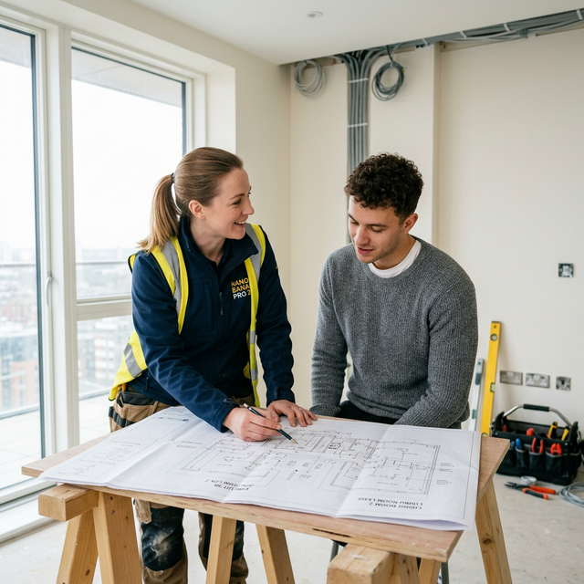

Вызов электрика в Кишиневе — это задача, к которой нужно подходить с максимальной ответственностью. Ошибка в электромонтаже может стоить не только испорченной техники, но и пожара. Как найти настоящего профи, а не дилетанта?
Настоящий мастер никогда не придет к вам с одной отверткой и изолентой. У специалиста всегда есть штроборез, строительный пылесос, обжимные клещи и качественные индикаторы. Если электрик просит у вас нож для зачистки проводов — гоните его в шею.
Хороший частный электрик всегда может заранее просчитать стоимость работ. После диагностики вам должны предоставить четкую смету: сколько стоит точка, сколько стоит метр прокладки кабеля и сборка щита.
Устные обещания не работают. Специалист, который уверен в качестве своих услуг электромонтажа, всегда дает гарантию от 1 года. В Кишиневе многие "мастера на час" исчезают после получения денег.
Профи сам подскажет, какой кабель купить (ВВГнг-LS), и почему нельзя скручивать медь с алюминием. Более того, многие электрики сами закупают материалы со скидками на проверенных базах Кишинева.
Попросите показать фото собранных электрощитов или выполненной разводки труб. Аккуратность сборки щита — лицо мастера.
Я работаю 24/7 и даю 1 год гарантии на все виды работ.
Вызвать мастера